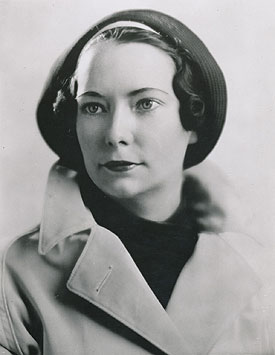
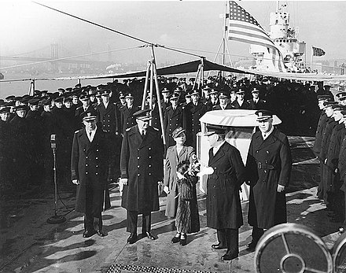
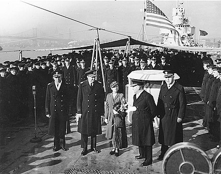

Margaret Munnerlyn Mitchell (November 8, 1900 - August 16, 1949)[2] was an American novelist and journalist. Mitchell wrote only one novel, published during her lifetime, the American Civil War-era novel Gone with the Wind, for which she won the National Book Award for Fiction for Most Distinguished Novel of 1936[3] and the Pulitzer Prize for Fiction in 1936 1937. Long after her death, a collection of Mitchell's girlhood writings and a novella she wrote as a teenager, titled Lost Laysen, were published. A collection of newspaper articles written by Mitchell for The Atlanta Journal was republished in book form.
Mitchell was struck and killed by a speeding drunk driver in 1949.
In May 1926, after Mitchell had left her job at the Atlanta Journal and was recovering at home from her ankle injury, she wrote a society column for the Sunday Magazine, Elizabeth Bennet's Gossip
, which she continued to write until August[74]:xv.Meanwhile, her husband was growing weary of lugging armloads of books home from the library to keep his wife's mind occupied while she hobbled around the house; he emphatically suggested that she write her own book instead:
For God's sake, Peggy, can't you write a book instead of reading thousands of them?In April 1935, Harold Latham of Macmillan, an editor looking for new fiction, read her manuscript and saw that it could be a best-seller. After Latham agreed to publish the book, Mitchell worked for another six months checking the historical references and rewriting the opening chapter several times.[102] Mitchell and John Marsh edited the final version of the novel.[103] GWTW was published in June 1936[103]. 
 
